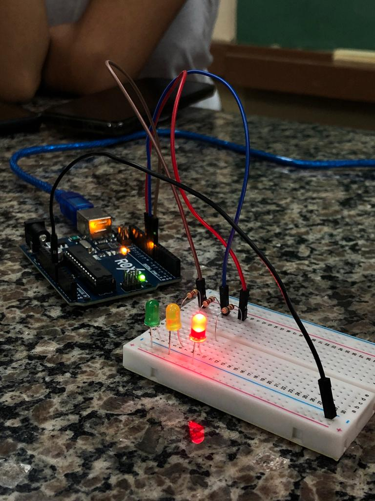
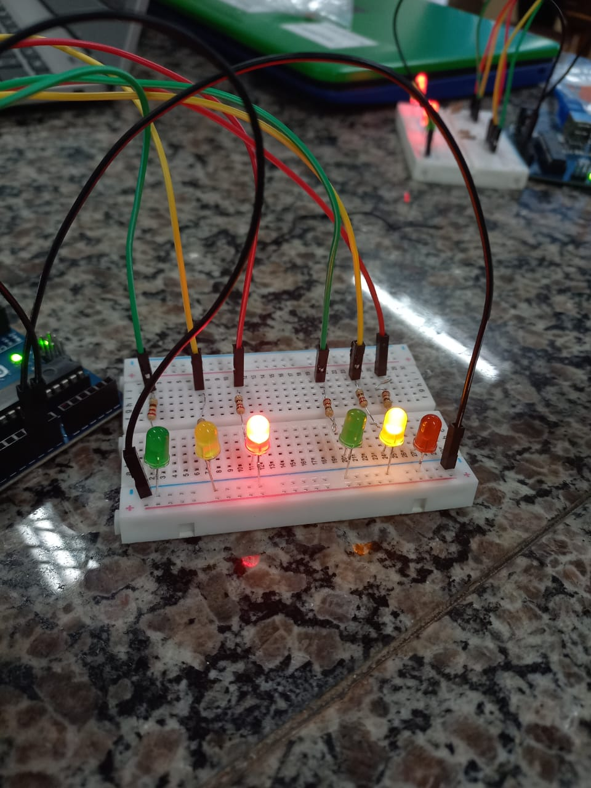
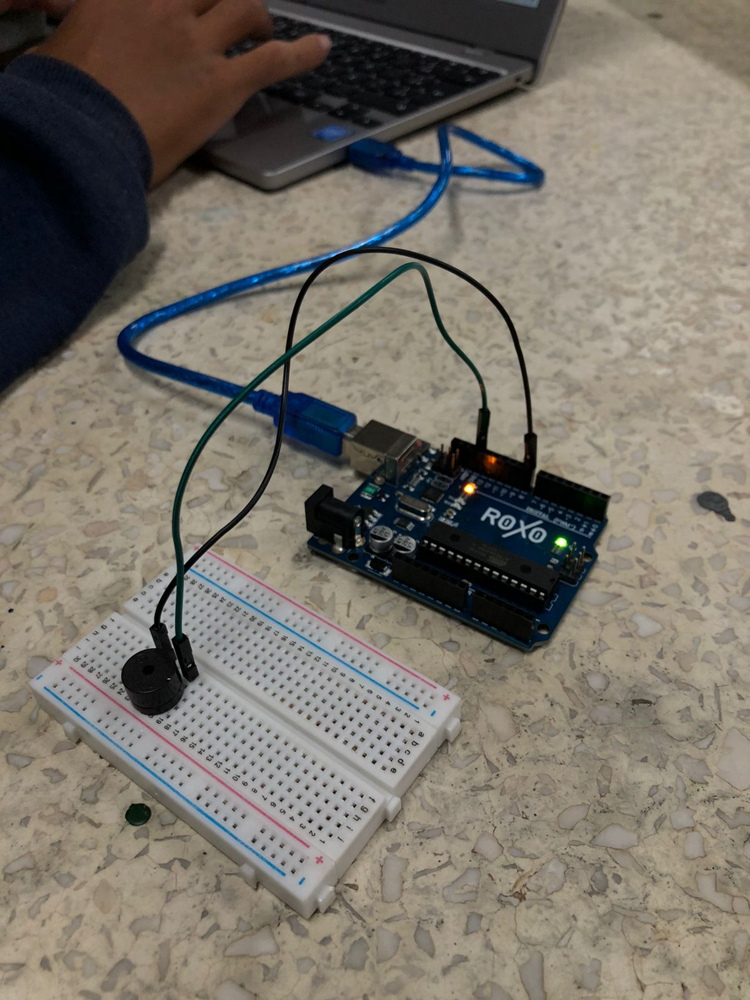

Nossos Projetos
Semáforo

Um projeto de semáfaro no arduino consiste em criar um semáfaro simples, utilizando LEDs nas cores verde, amarelo e vermelho um arduino uno, resistores de 220 ohms, jumpers e uma protoboard.
Onda Verde

Um projeto usando LEDs, contando com 6 LEDs, com 8 fios, e 6 resistores, o objetivo da onda verde é acender os LEDs iguais simultaniamentes
Contem dois verdes, dois vermelhos e dois amarelos, os dois verdes acendem juntos, os dois amarelos também tem que acender junto e os vermelhos as mesma coisa.
Buzzer

O buzzer é um dispositivo que emite som, quando configuramos ele, conseguimos colocar qualquer música de nossa preferência, basta ter as frequências das notas, e colocá-las nos códigos que ele irá começar tocar.